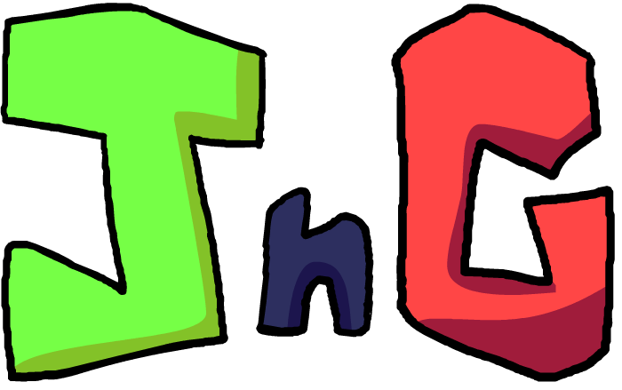

Whilst in development of JnG, there was a large discussion on if it should be animated and (if so) how to animate it, they eventually settled on a comic back in 2024. For the past year, they've writing different stories for the comics to form coherent storyline and become their first big project!
